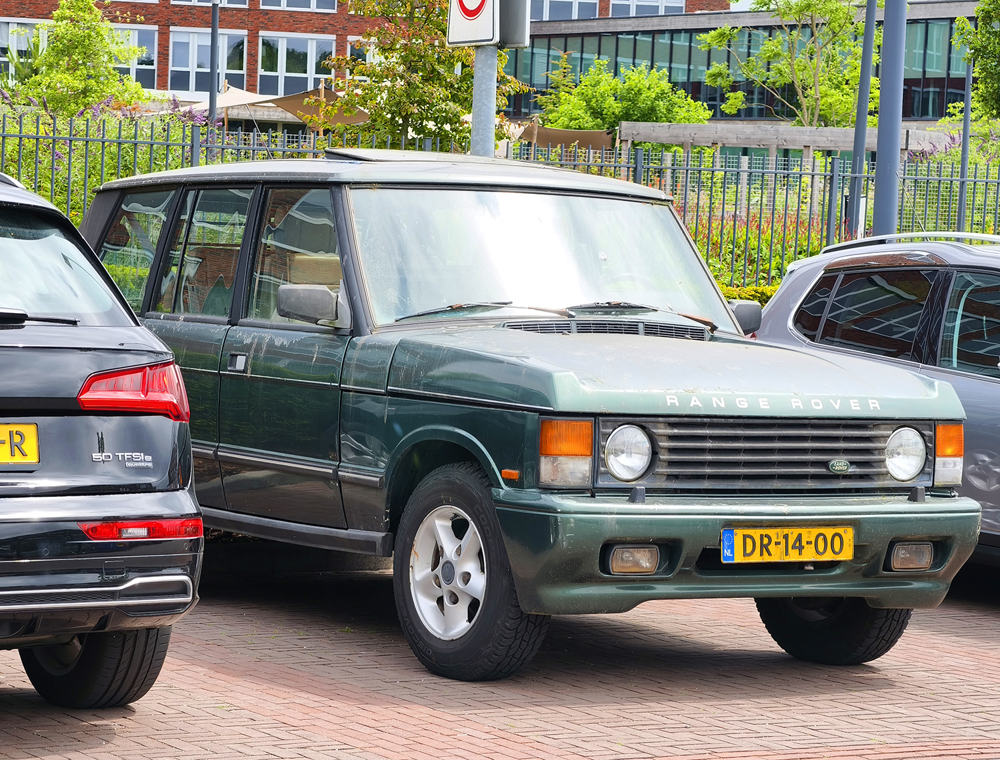
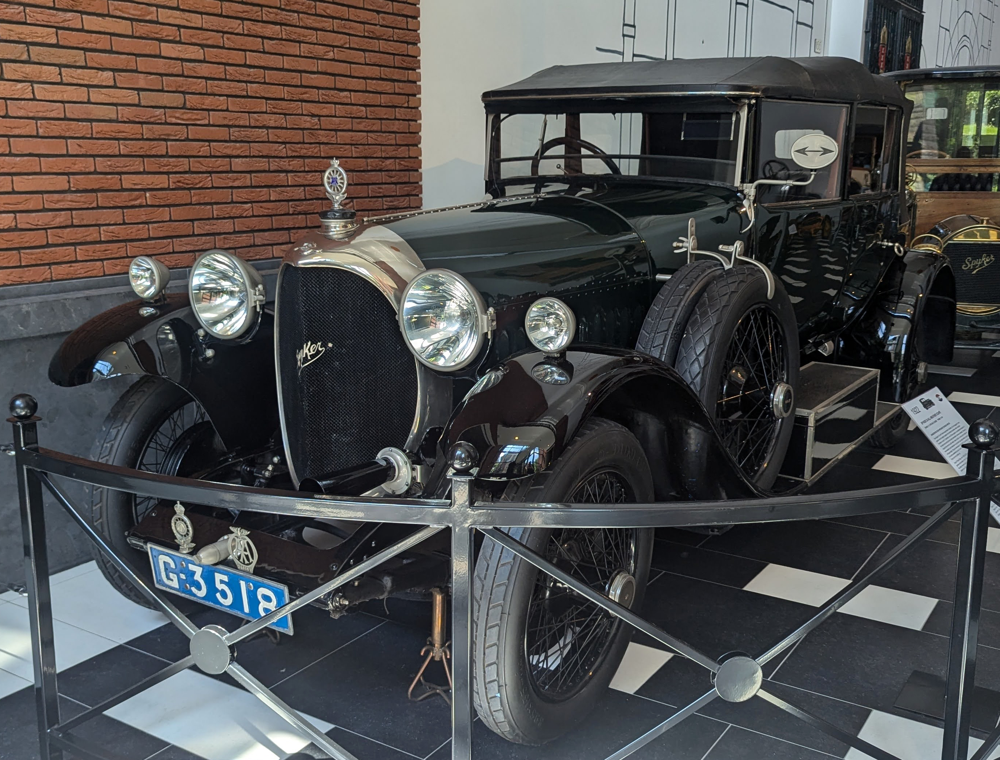
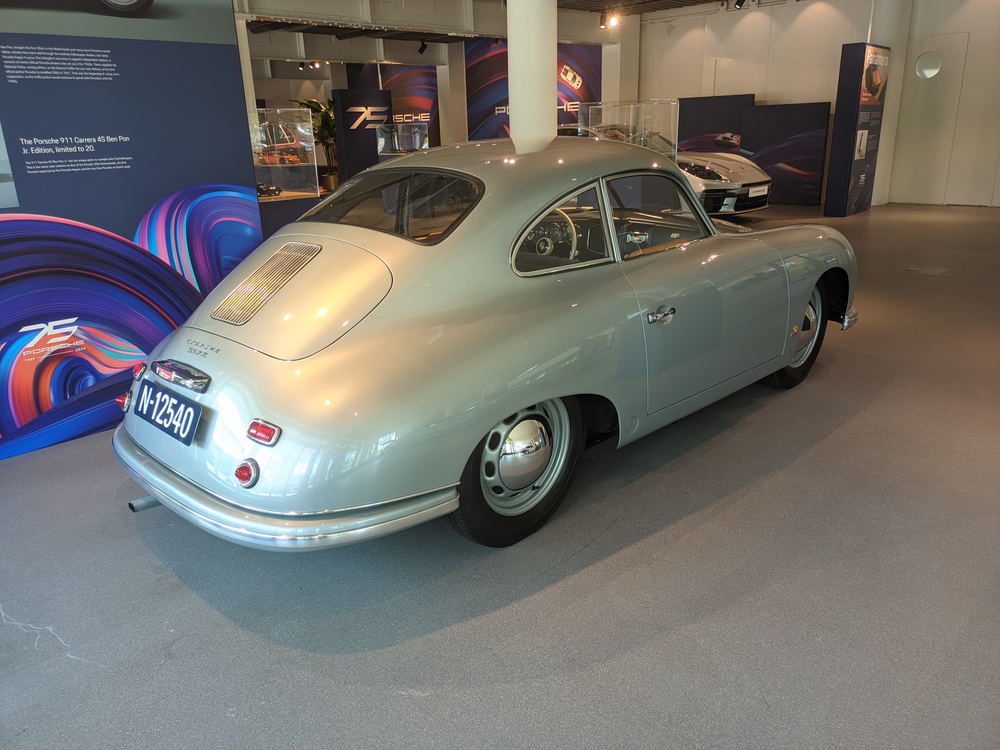
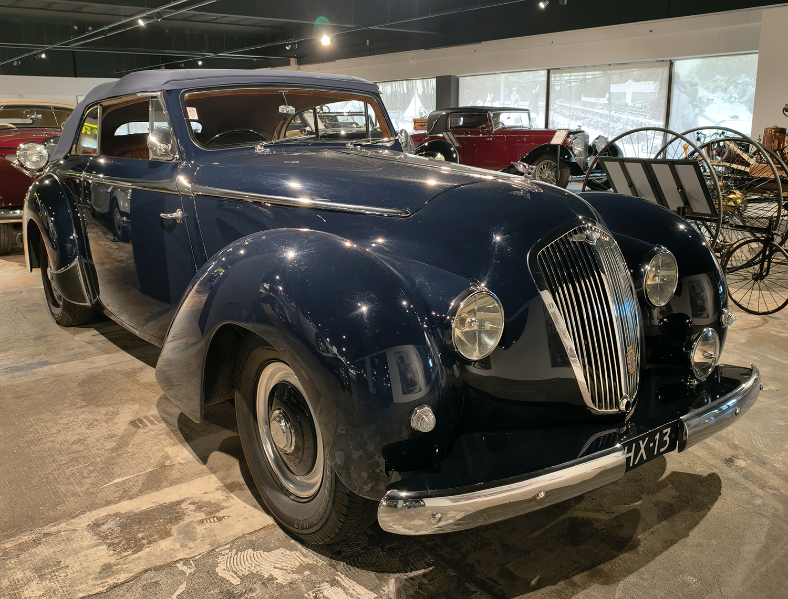

License Plates of The Netherlands (NL)
Photographed in The Netherlands


Sidecode 4. Semi-trailer Series. O = Oplegger (trailer). Small 1 means this is the first replacement plate.


Sidecode 1. Imported Oldtimer Series. Some letter combinations are reserved for imported vehicles. Small 1 means this is the first replacement plate.


Invalid carriage series. Anual plates, this is a 2024 issue. No coding.


Normal series from 1906 to 1956. N = Noord Brabant (North Brabant).


Normal series from 1906 to 1956. G = Noord Holland (North Holland).


Normal series from 1906 to 1956. H = Zuid Holland (South Holland).


Normal series from 1906 to 1956. N = Noord Brabant (North Brabant).


Normal series from 1906 to 1956. H = Zuid Holland (South Holland).


Normal series from 1906 to 1956. HX = Zuid Holland (South Holland).


Normal series from 1906 to 1956. HZ = Zuid Holland (South Holland).